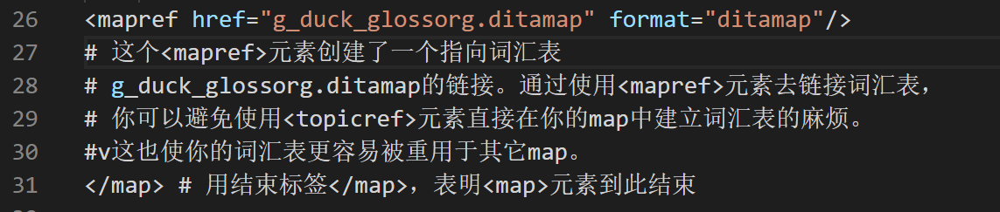

DITA Map | Lesson 1: 创建一个map
ditamap 文件的定义和目的
- 联结 topics
- 导航的基础、联结内容
- 决定交付物展现的 topic
- 为满足用户需求，为工作流中一系列 topic 设定导航
- 在 topic 之间创建联系
Map 可以用来编辑、组织和定义 DITA topic 之间的关系。一个 map可以包含如下内容：
- 关于某个产品信息的所有 concept 和 reference 类型 topic
- 为该产品提供使用说明的所有 task 类型 topic
- 一个相关术语的词汇表
创建一个新的 DITA Map
Map 可以包含元数据，例如产品信息、版权和出版日期。Map 中的元数据可用来帮助你的公司更有效地管理和分发你的内容，或帮助你的顾客更轻松地找到所需内容。
一个map至少要包含一个根
元素，允许你为map命名（例如“某产品的用户指南”）。<title>元素中的文本也可以用作输出文档的标题。 </li> <li>任意数量的<topicref>元素，允许你在 map 中引用 topic。一个<topicref>元素可以包含其它<topicref>元素。</li> <li>任意数量的<mapref>元素，允许你在主 map 中引用其它 map。</li> <li>任意数量的<reltable>元素，允许你定义内容之间的关系。</li> </ul> <p>示例：</p> <p><img src="../../images/DITA_create_map.png" alt="create a map" /></p> <h2><a class="header" href="#向一个-map-添加-topic-引用" id="向一个-map-添加-topic-引用">向一个 map 添加 topic 引用</a></h2> <p><topicref>元素结构如下：</p> <pre><code><topicref href="filepath/filename.dita"> </code></pre> <p>href属性包含一个链接，该链接指向map中某个topic。DITA规定，map中<topicref>元素指向的topic位置不能高于map本身，否则会导致某些输出类型报错。因此，map最好存储在最高一层。</p> <p><topicref>元素可能包含以下元素：</p> <ul> <li><topicmeta>元素，定义关于被引用topic的元数据。</li> <li>任意数量的<topicref>元素。</li> <li>任意数量的<mapref>元素。</li> </ul> <p>在嵌套<topicref>元素时，重要的一点是始终记得你的最终输出。DITA结构并不限制嵌套的<topicref>元素的数量限制，map中<topicref>元素可以包含任意数量的<topicref>元素。但是，每个被嵌套的<topicref>元素通常对应发布输出中的一个新的标题级别。所以，普遍认可的最好做法是，避免五层以上的<topicref>元素嵌套（最理想的是不超过二或三层）。</p> <p><img src="../../images/DITA_add_topic.png" alt="DITA_add_topic" /></p> <h2><a class="header" href="#向一个-map-添加-map-引用" id="向一个-map-添加-map-引用">向一个 map 添加 map 引用</a></h2> <p><map>元素结构如下：</p> <pre><code><mapref href="filepath/filename.ditamap" format="ditamap"> </code></pre> <p>href 属性包含了指向你的主 map 中引用到另一 map 的链接。format 属性明确了你正在链接到一个 DITA map。</p> <p><mapref>元素只能包含<topicmeta>、<data>和<data-about>元数据元素。按照 DITA 规定，不能在一个<mapref>元素中嵌套<topicref>或<mapref>元素。</p> <p>就像<topicref>元素允许你在多个 map 中重用一个 topic 一样，<mapref>元素允许你重用很多 topic。通过一次性建立一个 map 并在其他 map 中引用该 map，你可以节约时间和精力，无需反复创建 map 中相同的系列，或具有相同层级结构的<topicref>元素。</p> <p>除了重用，<mapref>元素为你提供了额外的内容发布灵活性。你可以在一个大的 map 中组合相关 map，这样你就可以为整个产品家族迅速交付所有内容。你还可以使用<mapref>元素来为 map 添加词汇表。</p> <p></p> <blockquote> <p>1本文内容部分引用自 <a href="www.learningdita.cn">TC互联</a>，仅作学习分享。</p> <p>如需转载请注明作者与来源。</p> </blockquote> </main> <nav class="nav-wrapper" aria-label="Page navigation"> <!-- Mobile navigation buttons --> <a rel="prev" href="../../TC_Paper/Structured_writing/StructuredWriting_DITA_Learningguide.html" class="mobile-nav-chapters previous" title="Previous chapter" aria-label="Previous chapter" aria-keyshortcuts="Left"> <i class="fa fa-angle-left"></i> </a> <a rel="next" href="../../TC_Paper/TC_Paper_简明英文写作之ASD-STE100的写作规则有哪些.html" class="mobile-nav-chapters next" title="Next chapter" aria-label="Next chapter" aria-keyshortcuts="Right"> <i class="fa fa-angle-right"></i> </a> <div style="clear: both"></div> </nav> </div> </div> <nav class="nav-wide-wrapper" aria-label="Page navigation"> <a rel="prev" href="../../TC_Paper/Structured_writing/StructuredWriting_DITA_Learningguide.html" class="nav-chapters previous" title="Previous chapter" aria-label="Previous chapter" aria-keyshortcuts="Left"> <i class="fa fa-angle-left"></i> </a> <a rel="next" href="../../TC_Paper/TC_Paper_简明英文写作之ASD-STE100的写作规则有哪些.html" class="nav-chapters next" title="Next chapter" aria-label="Next chapter" aria-keyshortcuts="Right"> <i class="fa fa-angle-right"></i> </a> </nav> </div> <script type="text/javascript"> window.playground_copyable = true; </script> <script src="../../elasticlunr.min.js" type="text/javascript" charset="utf-8"></script> <script src="../../mark.min.js" type="text/javascript" charset="utf-8"></script> <script src="../../searcher.js" type="text/javascript" charset="utf-8"></script> <script src="../../clipboard.min.js" type="text/javascript" charset="utf-8"></script> <script src="../../highlight.js" type="text/javascript" charset="utf-8"></script> <script src="../../book.js" type="text/javascript" charset="utf-8"></script> <!-- Custom JS scripts --> </body> </html>